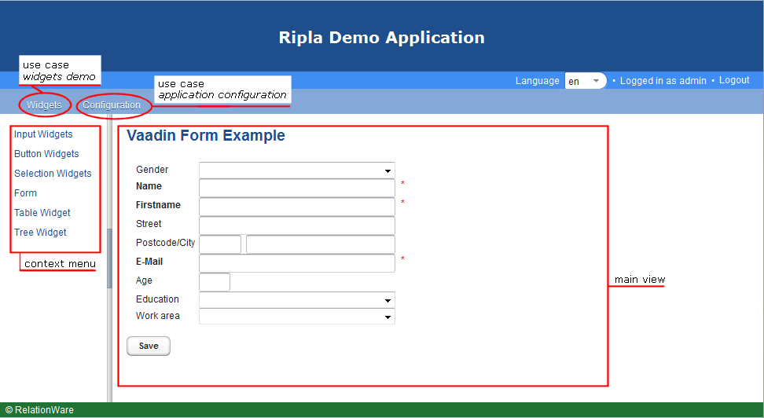

Rich Platform project for Java web applications.
This project is maintained by aktion-hip
Ripla is platform for rich web applications, like Eclipse RPC is a platform for rich client applications. Ripla is based on OSGi for the the modularization aspect and Vaadin for the user interface.
A Ripla application is composed of various use cases. Each use case is implemented as an independent OSGi bundle. This implies that the use case bundle has to provide all resources needed to accomplish the use case.
The visible expression of a use case in the browser window is an entry in the menu bar with a possibly complex pull down menu attached. If the user clicks an entry in the use case’s pull down menu, the associated view is displayed in the browser’s main window. Each use case view can be accompanied by a context menu which is displayed in the context menu area.
Therefore, a use case bundle for a Ripla application has to provide the menu set for the main menu, the views for the main window, the context menus and, of course, the controllers containing the logic to control the views.
